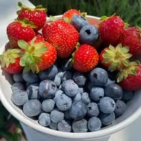

Usually mid-April to early June
U-pick organic strawberries
Pick juicy, organic strawberries straight from the plant at our family-owned farm in Indian Trail, just outside Charlotte. This is our busiest time of year, so plan ahead.
How the season works
When to come and when to book
Strawberry production rises to a peak and then falls. Picking usually peaks from late April through early May, and reservations fill quickly.
- Reservations open once fruit begins to ripen, usually a few weeks before the season starts
- Early on we release a small number of spots, then open more dates weekly
- When new reservations open, many people use the site at once, and it can show a temporary error. That does not mean we are full, so try again after the first busy period
Exact opening dates depend on the weather. Join our email list and we will tell you when picking opens.
At a glance
- USDA Certified Organic
- By reservation only, no walk-ins
- 4701 Hartis Rd, Indian Trail, NC
- U-cut flowers too. The better cutting flowers start in May
Why organic
Berries we feel good about eating
Grown without the poisons
Our family lives on the farm, and we eat the berries we grow. We grow our strawberries without the poisons commonly used in conventional strawberry farming.
USDA Certified Organic
We rotate our crops, plant cover crops and keep detailed records. Outside inspectors check us regularly to make sure we meet all current organic standards.
Limited on purpose
Organic practices mean we plant only about one-third of our fields at a time, so supply is limited. Reservations help us protect the farm while giving visitors the best experience.
Picked fresh, close to home
Most supermarket produce is harvested 5–7 days before it reaches the shelves. At Wise Acres you pick berries that are ready to eat.
Take them home
Care & handling
A few simple steps keep your berries at their best once you leave the farm.
- Refrigerate your berries as soon as you get home.
- Don’t wash them until you’re ready to serve.
- Rinse gently under cool water with the green caps still attached.
- Let them warm to room temperature before serving for the best flavor.

Fresh-picked strawberries 
Strawberries & blueberries 
A bowl of berries 
Poppies & larkspur
Strawberry questions
Before you pick
When is strawberry season in Indian Trail?
Strawberry season at Wise Acres is usually mid-April through early June, and picking typically peaks from late April through early May. Exact dates depend on the weather.
Do I need a reservation to pick strawberries?
Yes. The farm is always reservation-only. Reservations open once we begin seeing fruit ripen, usually a few weeks before the season starts. Strawberry season is our busiest time and reservations fill quickly.
Are your strawberries organic?
Yes. Wise Acres is a USDA Certified Organic farm. We rotate our crops, plant cover crops and keep detailed records. Outside inspectors check us regularly.
How should I store strawberries?
Refrigerate them as soon as you get home and don’t wash them until you’re ready to serve. Let them warm to room temperature before eating for the best flavor.
What is your rain policy?
A little rain doesn’t close the farm. You can change your reservation at no charge until 11:59 PM the night before your visit. If severe weather forces us to close, we’ll email you and give a full refund.